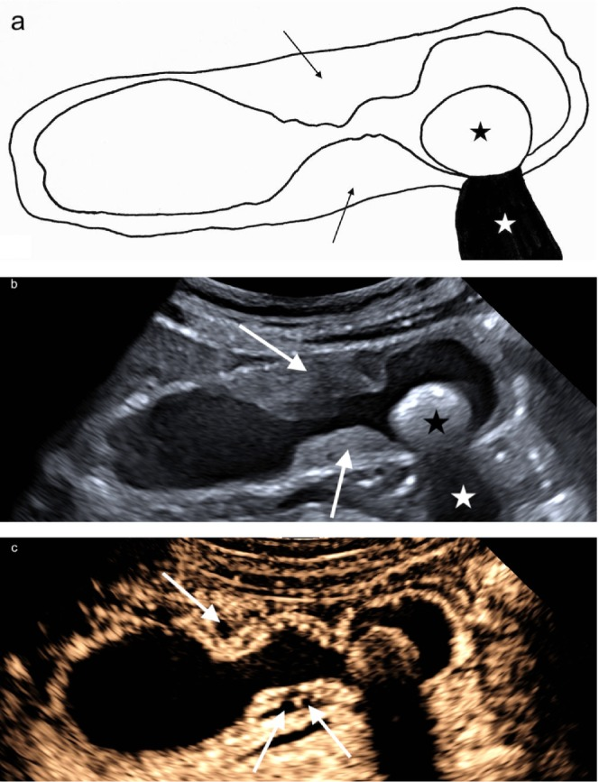

Ficha del catálogo
Adenomiomatosis vesicular
- Sistema
- Digestivo
- Modalidad
- US
- Región
- Vesícula biliar
- Dificultad
- Intermedio
Es una alteración benigna de la pared vesicular caracterizada por hiperplasia de la mucosa y del músculo, con invaginaciones epiteliales que forman divertículos intramurales conocidos como senos de Rokitansky-Aschoff. Suele ser un hallazgo casual, no es premaligna y en la mayoría de los pacientes no requiere tratamiento. Su importancia radica en no confundirla con un carcinoma vesicular.
Técnica
El ultrasonido es el método de elección. Se explora en ayuno de 6 a 8 horas con transductor convexo y se complementa siempre con transductor lineal de alta frecuencia, que es el que mejor demuestra los quistes intramurales y los artefactos característicos. Es conveniente estudiar la vesícula en varios decúbitos para separar el contenido luminal de la pared.
Qué observar
- Engrosamiento de la pared vesicular con pequeños espacios quísticos intramurales
- Artefacto de reverberación en cola de cometa originado en cristales de colesterol dentro de los senos
- Distribución del engrosamiento, que puede ser difusa, segmentaria o focal en el fondo
- Estrechamiento anular en la forma segmentaria, que da a la vesícula un aspecto de reloj de arena
- Conservación de la capa externa lisa y de la interfase con el hígado
- Ausencia de masa infiltrante, de adenopatías y de invasión del parénquima hepático adyacente
Hallazgos
La pared aparece engrosada con pequeñas cavidades anecoicas en su espesor y con artefactos brillantes en V que se proyectan hacia la profundidad, muy característicos. En la variante segmentaria un anillo de engrosamiento divide la luz en dos compartimentos y en la focal se forma un nódulo en el fondo, llamado adenomioma. En resonancia los senos rellenos de bilis se ven como puntos muy hiperintensos en T2 dispuestos en la pared, patrón conocido como collar de perlas, que resulta muy útil cuando el ultrasonido deja dudas.
Perlas
El artefacto en cola de cometa es la clave del diagnóstico y aparece mejor con transductor lineal, por lo que conviene no conformarse con el barrido convexo cuando se ve una pared engrosada. Un engrosamiento parietal con espacios quísticos y artefactos limpios, sin masa ni invasión hepática, permite tranquilizar al paciente. Cuando el engrosamiento es asimétrico, irregular y sin senos identificables debe descartarse una neoplasia.
Diagnóstico diferencial
- Carcinoma de vesícula
- Engrosamiento irregular y asimétrico con masa, invasión hepática, adenopatías y ausencia de senos intramurales.
- Colecistitis crónica
- Pared engrosada de forma uniforme con vesícula contraída y litiasis, sin quistes intramurales ni artefacto en cola de cometa.
- Colecistitis aguda
- Dolor focal con Murphy ecográfico positivo, líquido perivesicular y pared estratificada por edema.
- Colesterolosis con pólipos de colesterol
- Pequeños nódulos adheridos a la mucosa sin engrosamiento mural difuso ni senos.
- Engrosamiento parietal secundario a hepatopatía o insuficiencia cardiaca
- Pared estratificada con edema difuso, ascitis y contexto sistémico, sin quistes en el espesor de la pared.
Simuladores
- Vesícula contraída por falta de ayuno, que aparenta pared gruesa
- Barro biliar adherido a la pared que simula engrosamiento mural
- Gas duodenal adyacente que crea artefactos confundibles con los senos
Por modalidad
- US
- Método de elección, sobre todo con transductor lineal, que demuestra los senos y el artefacto en cola de cometa
- RM
- El patrón en collar de perlas en T2 confirma el diagnóstico cuando el ultrasonido no es concluyente
- TC
- Es poco específica y puede sugerir malignidad ante un engrosamiento parietal, por lo que no se usa como método primario
Protocolo
Ultrasonido en ayuno con transductor convexo de 3 a 5 MHz y transductor lineal de alta frecuencia sobre la pared, con exploración en decúbito supino y lateral izquierdo y con Doppler color para valorar la vascularización parietal. La resonancia se realiza con secuencias T2 de alta resolución sobre la vesícula y colangiorresonancia para descartar patología biliar asociada.
Clasificación
Errores frecuentes
- Informar sospecha de neoplasia ante un engrosamiento con senos y artefacto en cola de cometa
- Explorar solo con transductor convexo y perder el detalle de la pared
- Atribuir a adenomiomatosis un engrosamiento asimétrico e irregular sin quistes intramurales identificables

adenomiomatosis vesicula biliar senos de Rokitansky-Aschoff cola de cometa collar de perlas ultrasonido lesion benigna